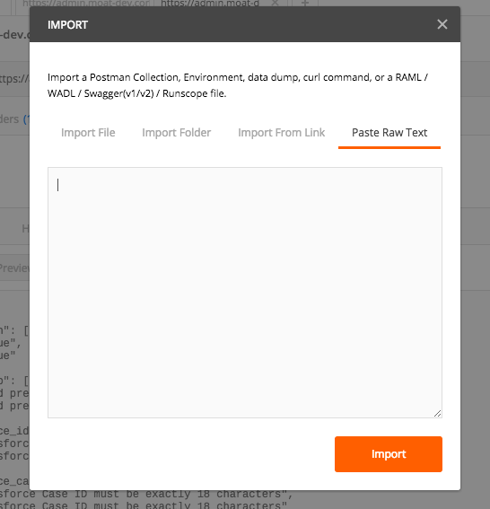
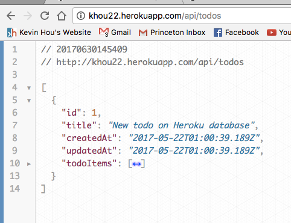

< Return to all blogs
Testing APIs: Postman, Network Debugging, and JSON
A couple of tools, tips, and tricks when developing APIs to improve your workflow.
Postman and Network Debugging
Postman is a clean, powerful tool to test APIs with custom configurations to suit your API’s needs. You can choose everything from the types of request (GET, POST, etc.) and the authorization type, to cookies and header data. It includes a great UI for displaying the body of the response as raw, pretty/formatted, or as a web page. It supports tests, pre-request scripts, and useful organization tools that help you manage requests you’ve previously made.
I’ve been doing a lot of server work both at Moat and on my personal time. I’ve been using Postman a lot so I figured I’d share a couple of useful tips I’ve come to learn.
The authentication features are great for public APIs and APIs with basic levels of security, however, many APIs rely on session cookies — bits of data that tell the browser that the user is signed in and has access to the site. At first, I attempted to manually cookies to the Postman request cookies input, but I believe I left out a couple and may have had some syntax errors because my requests would bounce back empty.
I did some digging online and found that there’s a really neat developer tool in Chrome for this exact thing. I’ve been using the Network developer tool in Chrome religiously these past couple weeks. They display information like response time, headers, etc. — pretty much anything you could need related to an API request. Unfortunately, I find the user interface somewhat confusing and it only handles information about the request. It can’t actually call a request. Like any developer, I have to make hundreds of calls to the same endpoint, often with the same data, over and over again even after the simplest of changes. For my project at work, triggering the API required over three clicks and filling out a form before the API was even called. Doing this every time I wanted to run a POST request was a huge pain and I didn’t have time for it. Instead, I discovered that the Chrome Network Tool compiles the request as a cURL command. For those that don’t know, a cURL command is a Command Line tool to make network requests. They’re somewhat hard to format and write out for convoluted network calls, but they’re a standard in the industry. Chrome allows you to copy the request as a cURL ready to be run from the command line! To do this, open the developer tool, click the network tab, run the API (the network tab must be open when the request is made for it to record), then right click the request and select “Copy → Copy as cURL”.

You can then run this command in the terminal by simply pasting the cURL into the prompt and pressing enter. This method is great for some testing like pinging a server and reading server print statements, but because I was more concerned with the request responses, I had to deal with large JSON objects — which Postman does a good job with.
Fortunately, Postman has a useful feature that allows users to import and export cURL commands. Make sure the cURL is still copied to your clipboard and navigate to your Postman window. In the top left corner, click the “Import” button and a modal should display. Click on the “Past Raw Text” option and past the cURL command in the text area.

Postman will import the cURL request with all the options, cookies, etc. and automatically create the API request for you! It’ll essentially duplicate the request the browser made, except in a much better UI. Now you can use all the wonderful Postman features with any network request!
I haven’t run into a situation where this doesn’t work (at least with cache-based login sessions) and I’m hoping it’s a catch all. I highly recommend this method for anyone dealing with server development. If you’re still using the browser to ping your API endpoints, I guarantee that it’ll speed up your workflow.
Dealing with JSON
JSON, along with some of its cousins like XML, is one of the data formats that serves as the bridge between programming languages. You can think of it as the glue that holds the Internet together. When called, API’s will return data — often in JSON format — for the site’s Javascript to parse through. Because JSON isn’t anything more than a specifically formatted String, it can be used pretty much universally.
As I’ve mentioned earlier, I’ve been working with massive JSON objects often — sometimes with thousands of entries in nested arrays. Debugging large, plain JSON text as a String is a nightmare. I’ve found a useful Chrome extension called JSON Viewer that automatically determines if the contents of the browser is valid JSON data and provides you with some useful tools to organize the information.
 JSON With No Formatting
JSON With No Formatting

JSON With Formatting
It turns the page into a text editor of sorts and you can compress objects and arrays very easily. It’ll use syntax highlighting and you can customize the font, text size, and more. Overall, just makes the process of looking at JSON much more enjoyable (restoring the romance in data if I may). It’s really useful when you want to compare two different objects that are separated by a massive, nested array. You can simply compress the array and it becomes infinitely cleaner to look at.
Posted in Programming